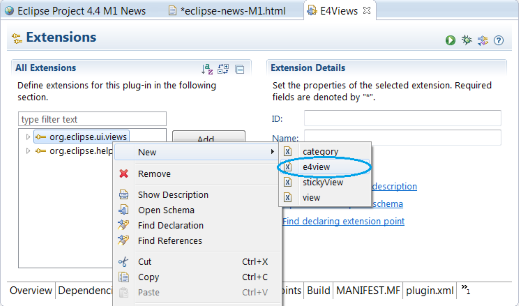

Platform Changes
org.eclipse.ui.views extension point now supports an e4view
element for declaring a new view for the IDE whose implementation
is done in the e4 style (i.e. an annotated POJO).

The new type of extension is identical to the original 'view' except for relaxing the requirement that the 'class' implement IViewPart.
For those that are unaware of the e4 way of coding, here's what the implementation of an e4 view looks like:
import javax.annotation.PostConstruct;
import org.eclipse.e4.ui.di.Focus;
import org.eclipse.swt.SWT;
import org.eclipse.swt.widgets.Composite;
import org.eclipse.swt.widgets.Label;
public class RealE4View {
Label label;
@PostConstruct
void createView(Composite parent) {
label = new Label(parent, SWT.BORDER);
label.setText("Testing");
}
@Focus
void setFocus() {
label.setFocus();
}
}
Note how it's a simple Java object (POJO) and how few dependencies it has; this has already proven itself as a far more convenient way to write the code and has great advantages in testing (because of its few dependencies).
-
Accessing legacy platform Color and Font definitions from within a CSS style sheet:

-
Overriding Color and Font definitions in a CSS style sheet:

-
Adding new style definitions within your CSS that will be surfaced for user customization on the Color and Font
preference page:

- The legacy color theme definitions overridden or added in the CSS style sheet are merged with the current theme.
- When switching themes, overridden values are re-merged with the new theme.
- The new definitions added with the CSS file (the last use case) are available in the CSS theme that provides it.

org.eclipse.debug.examples.mixedmode project demonstrates
how to use Debug's mixed-mode launching support. The org.eclipse.debug.examples.memory project provides sample content to display
in the Memory and Registers views.
WorkspaceLock API allowed a special client (usually Platform UI) to
hook into the locking protocols used by the workspace implementation. This hook
was used to mitigate deadlocks due to interaction with synchronous SWT events,
and was never intended to be used by other clients. In the 3.0 release this API
was deprecated in favor of a more general API provided by the org.eclipse.core.jobs
bundle. Invoking this API has had no effect since the 3.0 release. The specific API
being removed includes:
- The
org.eclipse.core.resources.WorkspaceLockclass. - The method
org.eclipse.core.resources.IWorkspace#setWorkspaceLock
IncrementalProjectBuilder#getRule() method returned a scheduling rule
that was required for building the project by the builder. This method was intended to be used by the builder framework only.
In the 3.6 release this method was deprecated in favor of a more general method IncrementalProjectBuilder#getRule(int, Map).
The specific API being removed includes:
- The method
org.eclipse.core.resources.IncrementalProjectBuilder#getRule()
IncrementalProjectBuilder#getRule(int, Map). Clients that implement the API listed
above should implement IncrementalProjectBuilder#getRule(int, Map) instead.
EMenuService service has been released as API. RCP clients must adjust their package imports to org.eclipse.e4.ui.services.
MLocalizable mixin interface is introduced, which contains the single method
updateLocalization(). This enables the platform to generically search the model for model elements affected by a
Locale change and force them to update.
ILocaleChangeService has been introduced, which supports changing Locale at runtime. Using this service will:
- Update the Locale in the application context.
- Inform all model elements of an application that implement
MLocalizationabout the change. - Post an event via event broker.
- Via event broker by listening to the topic org/eclipse/e4/core/NLS/LOCALE_CHANGE
- Via dependency injection by getting the value for
TranslationService.LOCALEinjected (e.g. via method injection) - Via attaching to the model events listening to the newly introduced LOCALIZED-Features
ResourceBundleProvider service has been introduced to abstract out the reference to the BundleLocalization OSGi service.
This enables application authors to change how ResourceBundles should be looked up within their Eclipse application, e.g. using class-based
ResourceBundles, loading translations out of a database, loading ResourceBundles from a server by using a different ResourceBundle.Control.
The default implementation DefaultResourceBundleProvider is internally using BundleLocalization to keep the
known default behaviour.
TranslationService, that is used to localize the application model, had several downsides regarding extensibility.
A lot of code needed to be copied in order to create a custom TranslationService that retrieves translations from a different location
than the OSGi-ResourceBundle. To make it easier for users to implement a custom TranslationService, the API was modified. The method
getResourceString(String, ResourceBundle) is moved from BundleTranslationProvider to TranslationService with
protected visibility, as it contains the logic to retrieve and transform the translation key that is set in the application model. The default
implementation BundleTranslationProvider is now using the ResourceBundleHelper in combination with the
ResourceBundleProvider. This way the localization of the application model and the localization via new message extension are using
the same mechanisms. As a small enhancement, this also enables the usage of dot separated keys for translating the application model.
As part of this work, the previously internal package org.eclipse.e4.core.services.translation has been released as API.
@import url("platform:/plugin/Bundle-Symbolic-Name/path/file.extension"); statement. This allows easy reuse of
existing style sheets.
BundleContext via an extended object supplier and the @Inject @OSGiBundle annotations.
org.eclipse.core.filesystem.java7 allows
to retrieve information about files such as permissions, link targets,
etc. using Java 7 API rather than native code. This enables full filesystem capabilities
on platforms with no native Eclipse filesystem fragment. There are three
different types of filesystems supported:
- DOS/Windows filesystems,
- POSIX compliant filesystems, and
- filesystems that are neither DOS/Windows nor POSIX compliant.
Equinox Changes
- Introduction of Service Scopes to the OSGi Service Registry (RFC 195)
- Improvements of Weaving Hooks (RFC 191)
- Clarification of hooks on the system bundle (RFC 198)
- Native environment namespace (RFC 188)
- Data Transfer Objects (RFC 185)
- Extension Bundle Activators (RFC 204)
- Addition of FrameworkWiring.findProviders - no RFC
For most consumers and developers this change should not be noticed. But, as documented in the wiki, there are four main areas of concern that the community should be aware of:
- The Framework no longer uses the old Equinox resolver API org.eclipse.osgi.service.resolver internally to resolve bundles.
- All Equinox Framework specific hook implementations are broken and will need to migrate.
- Removal of old style plug-in support. A compatibility fragment is available to add the support back.
- Removal of PlatformAdmin Service Implementation. A compatibility fragment is available to add support back.
The Equinox Regions has added a new namespace for sharing bundle lifecycle operations between regions. In previous versions of Equinox regions the only way to share bundle lifecycle operations across different regions was to share complete bundles which also shared all capabilities provided by the bundle. Now it is possible to use the org.eclipse.equinox.allow.bundle.lifecycle namespace to share only the bundle lifecycle operations between different regions. (see bug 418224)
- debug/bundleTime
- Prints out timing information for bundle activation
- debug/cachedmanifest
- Debug the caching of bundle headers
- debug/location
- Prints out location service debug information
- debug/startlevel
- Prints out start level service debug information
- monitor/activation
- Monitor persistent bundle activation
- resolver/providers
- Prints out information about matching capabilities returned to the resolver and why any were filtered out
- resolver/hooks
- Prints out information about capabilities or resources that were filtered by resolver hooks
- resolver/uses
- Prints out information about uses constraint violations
- resolver/wiring
- Prints out wiring information after the resolve process completes
- resolver/report
- Prints out the resolution report information
- resolver
- enables all resolver trace options
SWT Changes
Combo widget now supports the same SegmentListener API as Text.
This allows an application to specify
segment boundaries and Unicode Control Characters to use in the segment boundaries.
Snippet332 shows how to accomplish RTL override in a Combo.

JFace clients can use BidiUtils#applyBidiProcessing(...) to set pre-defined text types.
StyledText.isTextSelected() can be used to quickly determine whether any text
in the widget is selected or not.
SWT.Sleep and SWT.Wakeup,
which are sent before the Display event loop goes into sleep and after
it wakes up from sleep respectively. These events can e.g. be used to monitor the duration
of sleep time in SWT applications.
StyledText widget on WindowsStyledText widget now supports setting the text direction via the
setTextDirection(int) API on the Windows platform. The setTextDirection
(int) and getTextDirection () APIs are also added to TextLayout
(implemented only on Windows currently).
SWT_GTK3 to 1 or by adding the launcher parameters --launcher.GTK_version 3.
SWT.WEBKIT, and set the environment variable SWT_WEBKIT2
to 1. This is only supported with GTK+ 3.x; if GTK+ 3 is disabled the browser will
fallback to WebKit1.
Display object as shown below:
Display.setAppName("APP_NAME"); // APP_NAME will used as AppUserModelID
Display display = new Display();